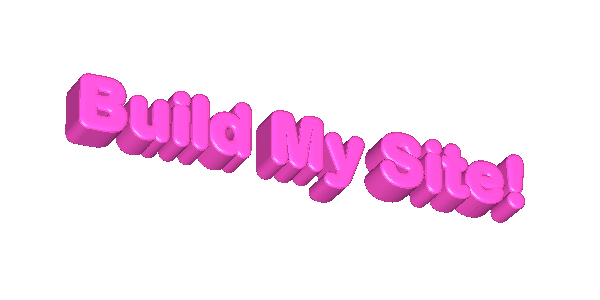

~ Contributor Map ~
See where people are building from around the world.
New pages appear automatically after merge. Hit Random Page and see what strangers built.

A community-built webpage where anyone can add their own page.
Fork the repo, drop in your HTML, open a pull request, and watch it go live.
See where people are building from around the world.
New pages appear automatically after merge. Hit Random Page and see what strangers built.